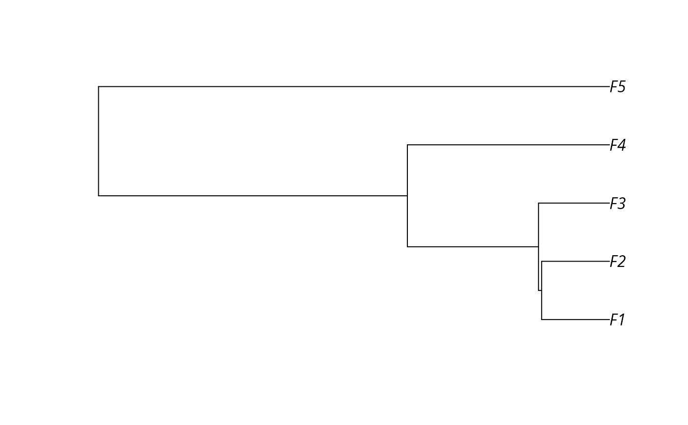

Simulated data for prioritizing conservation projects based on a single objective.
Format
- sim_projects
tibble::tibble()object.- sim_actions
tibble::tibble()object.- sim_features
tibble::tibble()object.- sim_tree
ape::phylo()object.
Details
The data set contains the following objects:
sim_projectsA
tibble::tibble()object containing data for six simulated conservation projects. Each row corresponds to a different project and each column contains information about the projects. This table contains the following columns."name"This column contains the
charactername for each project."success"This column contains
numericvalues that denote probability of each project being successfully completed if it is funded."F1"..."F5"These columns (i.e.,
"F1","F2","F3","F4","F5") containnumericvalues that indicate the probability that each feature will persist if the project is successfully completed. Missing values (NA) indicate that a feature does not benefit from a project being funded."F1_action"..."F5_action"These columns (i.e.,
"F1_action","F2_action","F3_action","F4_action","F5_action") containlogical(TRUE/FALSE) values that indicate if each action is associated with each project or not."baseline_action"This column contains
logicalvalues indicating if each project is the baseline project or not.
sim_actionsA
tibble::tibble()object containing data for six simulated actions. Each row corresponds to a different action and each column contains information about the actions. This table contains the following columns."name"This column contains the
charactername for each action."cost"This column contains
numericvalues denoting the cost for each action."locked_in"This column contains
logicalvalues indicating if particular actions should be locked into the solution."locked_out"This column contains
logicalvalues indicating if particular actions should be locked out of the solution.
sim_featuresA
tibble::tibble()object containing data for five simulated features. Each row corresponds to a different feature and each column contains information about the features. This table contains the following columns."name"This column contains the
charactername for each feature."weight"This column contains
numericvalues denoting the weight for each feature.
- tree
A
ape::phylo()phylogenetic tree for the features.
Examples
# load data
data(sim_projects, sim_actions, sim_features, sim_tree)
# print project data
print(sim_projects)
#> # A tibble: 6 × 13
#> name success F1 F2 F3 F4 F5 F1_action F2_action
#> <chr> <dbl> <dbl> <dbl> <dbl> <dbl> <dbl> <lgl> <lgl>
#> 1 F1_project 0.919 0.791 NA NA NA NA TRUE FALSE
#> 2 F2_project 0.923 NA 0.888 NA NA NA FALSE TRUE
#> 3 F3_project 0.829 NA NA 0.502 NA NA FALSE FALSE
#> 4 F4_project 0.848 NA NA NA 0.690 NA FALSE FALSE
#> 5 F5_project 0.814 NA NA NA NA 0.617 FALSE FALSE
#> 6 baseline_proj… 1 0.298 0.250 0.0865 0.249 0.182 FALSE FALSE
#> # ℹ 4 more variables: F3_action <lgl>, F4_action <lgl>, F5_action <lgl>,
#> # baseline_action <lgl>
# print action data
print(sim_actions)
#> # A tibble: 6 × 4
#> name cost locked_in locked_out
#> <chr> <dbl> <lgl> <lgl>
#> 1 F1_action 94.4 FALSE FALSE
#> 2 F2_action 101. FALSE FALSE
#> 3 F3_action 103. TRUE FALSE
#> 4 F4_action 99.2 FALSE FALSE
#> 5 F5_action 99.9 FALSE TRUE
#> 6 baseline_action 0 FALSE FALSE
# print feature data
print(sim_features)
#> # A tibble: 5 × 2
#> name weight
#> <chr> <dbl>
#> 1 F1 0.211
#> 2 F2 0.211
#> 3 F3 0.221
#> 4 F4 0.630
#> 5 F5 1.59
# plot phylogenetic tree
plot(sim_tree)
